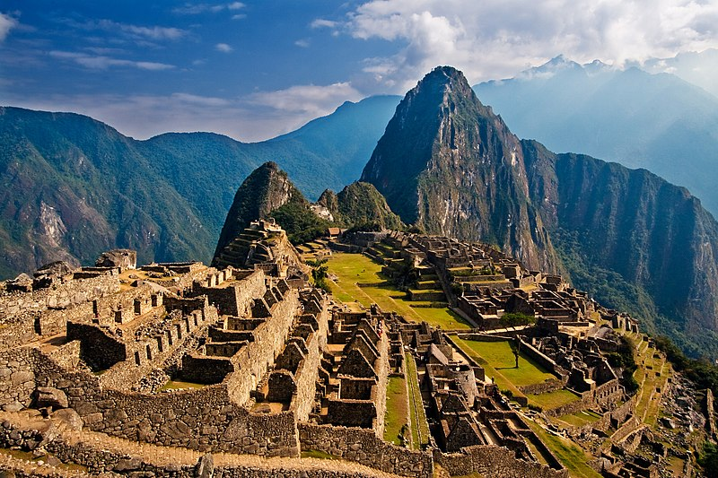

| Wonder | Location | Image | Year | Google Map |
|---|---|---|---|---|
| Great Wall of China | China | |
700BC | |
| Petra | Ma'an, Jordan | |
312BC | |
| Colosseum | Rome, Italy | AD 80 | ||
| Chichen Itza | Yucatan, Mexico | AD600 | ||
| Machu Picchu | Cuzco Region, Peru |  | AD1450 | |
| Taj Mahal | Agra, India | |
AD1643 | |
| Christ the Redeemer | Rio de Janeiro,Brazil | AD1931 |